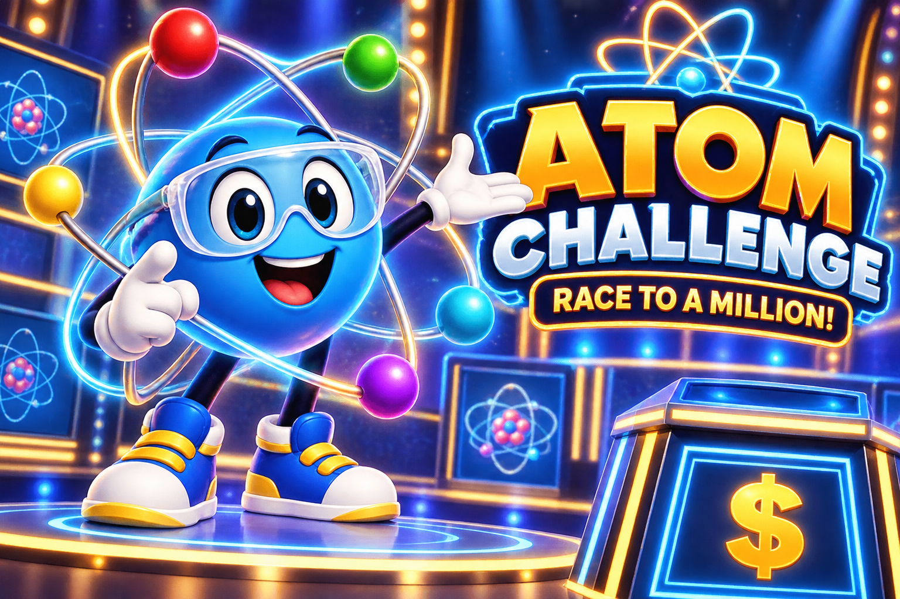

Meet Zappy! ⚡
“You’ve got potential! Build atoms, solve science mysteries, and race to a million!”
Ready to become an Atom Millionaire?
Build atoms, solve science mysteries, and climb the prize ladder. All prize money is imaginary!
⚙️ Teacher settings
No accounts, names, or student data required. Works with touch, mouse, or keyboard.